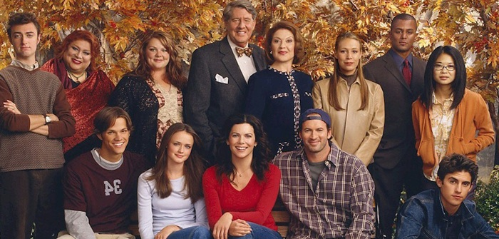

Gilmore Girls Alumni

Actors
Gilmore Girls was an early stop for many who later found notoriety in more visible roles. Below lists actors with more than one appearance, which excludes the quick appearances of Mad Men’s Jon Hamm and New Girl’s Max Greenfield.
-
Melissa McCarthy
153 episodes
Appearing in all but one episode of the Gilmore Girls, Melissa went on to win an Emmy in 2011 for Mike & Molly and was the third highest paid actress of 2015.
-
Jared Padalecki
63 episodes
Rory's first boyfriend left the show to star in Supernatural which is entering its 11th season as well as the lead role in 2009's Friday the 13th.
-
Matt Czuchry
59 episodes
After playing Logan Huntzberger, Matt starred in the raunchy comedy I Hope They Server Beer in Hell before landing a starring role in CBS's The Good Wife which is in its 7th season.
-
Todd Lowe
42 episodes
Lane's bandmate and eventual husband went south to Louisiana to play Sookie's co-worker and friend in 66 of True Blood's 80 episodes.
-
Milo Ventimiglia
37 episodes
Luke's moody nephew went on to star in the hugely popular Heroes and Sylvester Stallone's son in Rocky Balboa.
-
Vanessa Marano
13 episodes
Luke's daughter currently stars in ABC Family's Switched at Birth appearing in all 85 episodes.
-
Chad Michael Murray
11 episodes
Chad abruptly left Gilmore Girls when he received the lead role in One Tree Hill lasting 9 seasons.
-
Adam Brody
9 episodes
Lane's love interest also left after receiving a starring role in another TV show: The OC which aired 92 episodes.
-
Arielle Kebbel
9 episodes
Dean's rebound and eventual wife went on to star in several movies including John Tucker Must Die and The Uninvited before starring as The Rock's girlfriend in HBO's Ballers.
-
Krysten Ritter
8 episodes
After leaving Yale and the Gilmore Girls, Krysten become Jesse Pinkman's girlfriend on Breaking Bad before landing the starring role in ABC's Don't Trust the B in Apt 23.
-
Riki Lindhome
5 episodes
Playing a classmate of Rory's at Yale, Riki went to co-create and star in IFC's Garfunkel & Oates and Comedy Central's Another Period.
-
Danny Pudi
4 episodes
Three years after working in the newsroom at Yale with Rory, Danny was casted as Abed in NBC's Community, recently revived by Yahoo! Screen.
-
Billy Burke
3 episodes
Playing Lorelai's love interest, Billy later starred as Bella's dad in the Twilight Series and won the lead role in NBC's Revolution and CBS's Zoo.
-
Nick Offerman
2 episodes
Four years before being cast as Ron Swanson in NBC's Parks and Recreation, Nick played Sookie's lazy brother-in-law.

Directors
TV is more an actors or writers medium than directors who tend to work on an episode here and there. Though of the 12 people that directed 5+ episodes, half went on to bigger roles in shows highlighting strong females and family-oriented content.
-
Jamie Babbit
18 episodes
Jamie went on to direct 9 episodes of Drop Dead Diva and co-executive produce/direct FX's Married.
-
Lee Shallat Chemel
13 episodes
Lee has directed an amazing 52 of 144 episodes of ABC's The Middle, a sweet family sitcom.
-
Kenny Ortega
12 episodes
Kenny is now a Disney Channel favorite, directing High School Musical, High School Musical 2, and the recently aired The Descendants.
-
Daniel Palladino
6 episodes
Husband to Gilmore Girls' creator Amy Sherman-Palladino, Daniel is one of many connections to Family Guy including Seth McFarland's guest appearance at Lorelei's graduation.
-
Lesli Linka Glatter
5 episodes
Directing Gilmore Girls' pilot along with several more early episodes, Lesli then directed 8 episodes of The West Wing, 6 episodes of Mad Men, and 12 episodes of Homeland.
-
Gail Mancuso
5 episodes
Also directing several early episodes, Gail began directing episodes of Scrubs (9 episodes), 30 Rock (8 episodes) before winning two Emmys while directing 19 episodes of Modern Family.
Gilmore Girls’ format didn’t lend itself to easily introducing new characters like Seinfeld, 7th Heaven, or Friday Night Lights, making this list even more impressive. I regularly recognize faces in movies and shows only to find out they honed their acting chops in the fast-paced dialogue of Stars Hollow.